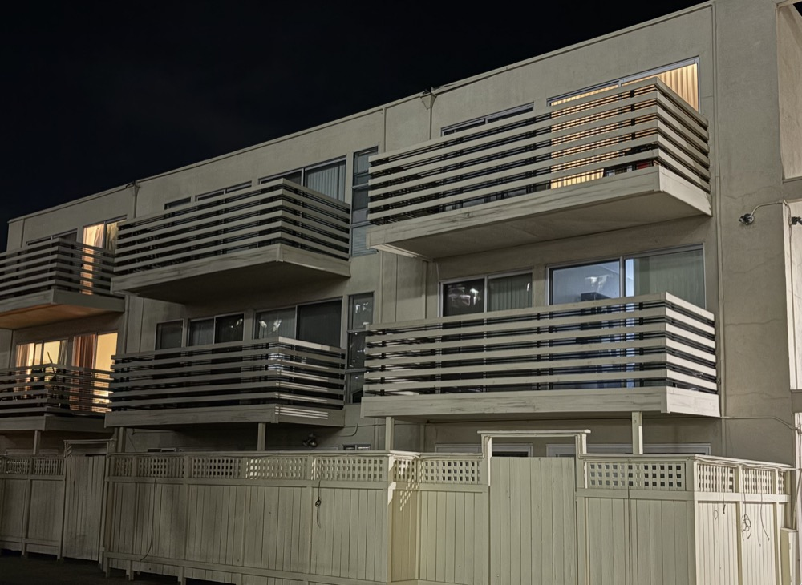
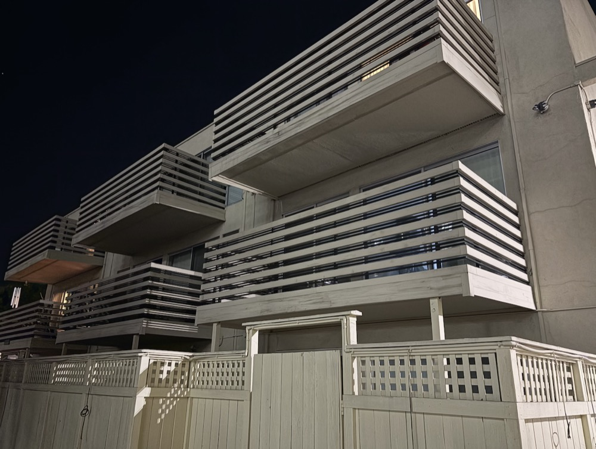

CS180 · Project 0
Becoming Friends with Your Camera
Exploring perspective, focal length, and the center of projection.
Part 1 — Selfie: The Wrong Way vs. The Right Way
The Wrong WayClose up, no zoom
The Right WayStepped back, zoomed in
Part 2 — Architectural Perspective Compression

Zoomed In, Far AwayCompressed perspective

Walked Up, No ZoomStretched perspective
Part 3 — The Dolly Zoom